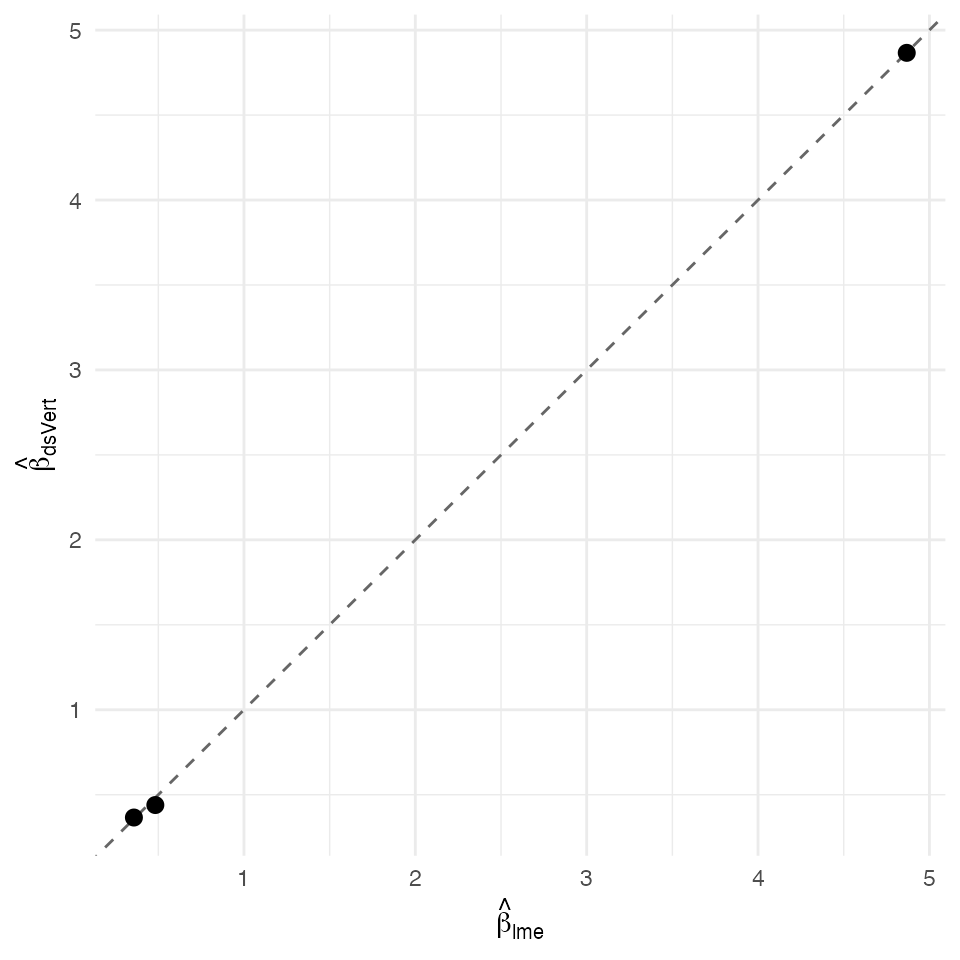

Linear mixed model — federated K=3 REML 1-D profile + within-between ANOVA
David Sarrat González, Miron Banjac, Juan R. González
2026-05-02
Source:vignettes/methods/lmm_k3.Rmd
lmm_k3.Rmd1. Context
Random-intercept linear mixed model with K = 3 vertical-partitioned
covariates. The K = 3 path uses a one-dimensional REML profile over the
intra-cluster correlation
:
each profile evaluation runs a federated weighted-Gaussian
ds.vertGLM with per-cluster GLS weights derived from the
candidate
,
recovering
consistently. The variance components
are then recovered via the Pinheiro & Bates (2000) §2.4.2
within-between ANOVA on the outcome y, with an X-correction step
subtracting
per server to undo the within-cluster X variance absorbed into the raw
MSW.
The synthetic longitudinal generator below produces clusters × observations = total rows with σ_b² = 0.5, σ² = 1, β = (5, 0.5, 0.3), x_1 ∼ N(0, 1) and x_2 ∼ Bern(0.5) iid within cluster — the well-identified regime for testing the variance- component recovery (Pinheiro–Bates Eq. 2.21).
Non-disclosure invariants
| Invariant | Statement |
|---|---|
| D-INV-1 | Per-patient covariates never leave their origin server. |
| D-INV-2 | Per-row never reconstructed. |
| D-INV-3 | Per-patient residuals never revealed; only per-cluster aggregates (cluster sizes + per-cluster sum_y, sum_y²) and per-server pooled within-X cross-products. |
| D-INV-4 | Cluster id and outcome local to label server. |
| D-INV-5 | Cross-server messages signed Ed25519 against
dsvert.trusted_peers. |
2. Data preparation
n_clusters <- 60L
n_obs <- 10L
n <- n_clusters * n_obs
cluster_id <- rep(sprintf("C%04d", seq_len(n_clusters)), each = n_obs)
patient_id <- sprintf("R%05d", seq_len(n))
b_i <- rnorm(n_clusters, 0, sqrt(0.5))
b <- rep(b_i, each = n_obs)
x1 <- rnorm(n)
x2 <- rbinom(n, 1L, 0.5)
y <- 5 + 0.5 * x1 + 0.3 * x2 + b + rnorm(n, 0, 1)
pooled <- data.frame(
patient_id = patient_id,
cluster_id = cluster_id,
x1 = x1, x2 = x2, y = y)
head(pooled)
#> patient_id cluster_id x1 x2 y
#> 1 R00001 C0001 -0.1414707 0 3.350217
#> 2 R00002 C0001 0.1673299 1 4.915754
#> 3 R00003 C0001 -0.1987886 0 4.737984
#> 4 R00004 C0001 -0.2912072 0 5.290880
#> 5 R00005 C0001 -1.7343970 0 3.882352
#> 6 R00006 C0001 -0.2727283 1 5.728462
s1 <- pooled[, c("patient_id", "x1")]
s2 <- pooled[, c("patient_id", "x2")]
s3 <- pooled[, c("patient_id", "cluster_id", "y")]
head(s1)
#> patient_id x1
#> 1 R00001 -0.1414707
#> 2 R00002 0.1673299
#> 3 R00003 -0.1987886
#> 4 R00004 -0.2912072
#> 5 R00005 -1.7343970
#> 6 R00006 -0.2727283
head(s2)
#> patient_id x2
#> 1 R00001 0
#> 2 R00002 1
#> 3 R00003 0
#> 4 R00004 0
#> 5 R00005 0
#> 6 R00006 1
head(s3)
#> patient_id cluster_id y
#> 1 R00001 C0001 3.350217
#> 2 R00002 C0001 4.915754
#> 3 R00003 C0001 4.737984
#> 4 R00004 C0001 5.290880
#> 5 R00005 C0001 3.882352
#> 6 R00006 C0001 5.728462
dslite.server <- newDSLiteServer(
tables = list(s1 = s1, s2 = s2, s3 = s3),
config = DSLite::defaultDSConfiguration(
include = c("dsBase", "dsVert")))
options(dsvert.require_trusted_peers = FALSE,
datashield.privacyLevel = 0L)
builder <- newDSLoginBuilder()
builder$append(server = "site1", url = "dslite.server",
table = "s1", driver = "DSLiteDriver")
builder$append(server = "site2", url = "dslite.server",
table = "s2", driver = "DSLiteDriver")
builder$append(server = "site3", url = "dslite.server",
table = "s3", driver = "DSLiteDriver")
conns <- datashield.login(builder$build(),
assign = TRUE, symbol = "D",
opts = list(server = dslite.server))
psi <- ds.psiAlign("D", "patient_id", "DA",
datasources = conns, verbose = FALSE)
psi[[1]]$n_matched
#> [1] 6003. Federated K=3 LMM
fit_ds <- ds.vertLMM.k3(
y ~ x1 + x2,
data = "DA", cluster_col = "cluster_id",
rho_lo = 0.001, rho_hi = 0.999,
tol = 5e-3, max_outer = 10L,
verbose = FALSE, datasources = conns)
fit_ds
#> dsVert LMM (K=3, REML 1-D profile)
#> Clusters = 60 Total N = 600
#> rho = 0.9949 sigma_b^2 = 0.4229 sigma^2 = 1.046
#>
#> Fixed effects (beta):
#> (Intercept) x1 x2
#> 4.86617 0.43926 0.365774. Centralised reference
fit_ref <- nlme::lme(
y ~ x1 + x2, random = ~ 1 | cluster_id,
data = pooled, method = "REML")
summary(fit_ref)
#> Linear mixed-effects model fit by REML
#> Data: pooled
#> AIC BIC logLik
#> 1822.431 1844.391 -906.2157
#>
#> Random effects:
#> Formula: ~1 | cluster_id
#> (Intercept) Residual
#> StdDev: 0.690659 0.9974421
#>
#> Fixed effects: y ~ x1 + x2
#> Value Std.Error DF t-value p-value
#> (Intercept) 4.867791 0.10670575 538 45.61883 0
#> x1 0.482592 0.04288244 538 11.25383 0
#> x2 0.357589 0.08495202 538 4.20930 0
#> Correlation:
#> (Intr) x1
#> x1 -0.007
#> x2 -0.394 -0.041
#>
#> Standardized Within-Group Residuals:
#> Min Q1 Med Q3 Max
#> -2.843868658 -0.679349095 0.001395507 0.671184647 2.871344643
#>
#> Number of Observations: 600
#> Number of Groups: 605. Comparison and verdict
ds_b <- as.numeric(fit_ds$coefficients)
rf_b <- as.numeric(nlme::fixef(fit_ref))
nm <- names(fit_ds$coefficients)
delta <- data.frame(
coef = nm,
dsVert = ds_b,
lme = rf_b)
delta$abs <- abs(delta$dsVert - delta$lme)
delta
#> coef dsVert lme abs
#> 1 (Intercept) 4.8661700 4.8677913 0.001621236
#> 2 x1 0.4392566 0.4825919 0.043335281
#> 3 x2 0.3657681 0.3575889 0.008179298
max_abs <- max(delta$abs)
sigma_min <- min(sqrt(diag(as.matrix(vcov(fit_ref)))))
sigma_ratio <- sigma_min / max_abs
sigma_b2_ds <- as.numeric(fit_ds$sigma_b2)
sigma_b2_ref <- as.numeric(nlme::VarCorr(fit_ref)[1L, 1L])
sigma2_ds <- as.numeric(fit_ds$sigma2)
sigma2_ref <- as.numeric(nlme::VarCorr(fit_ref)[2L, 1L])
c(max_abs_delta = max_abs,
sigma_min = sigma_min,
sigma_ratio = sigma_ratio,
sigma_b2_ds = sigma_b2_ds,
sigma_b2_ref = sigma_b2_ref,
delta_sigma_b2 = abs(sigma_b2_ds - sigma_b2_ref),
sigma2_ds = sigma2_ds,
sigma2_ref = sigma2_ref,
delta_sigma2 = abs(sigma2_ds - sigma2_ref))
#> max_abs_delta sigma_min sigma_ratio sigma_b2_ds sigma_b2_ref
#> 0.04333528 0.04288244 0.98955030 0.42287826 0.47700990
#> delta_sigma_b2 sigma2_ds sigma2_ref delta_sigma2
#> 0.05413164 1.04642335 0.99489070 0.05153265
ggplot(delta, aes(lme, dsVert)) +
geom_abline(slope = 1, intercept = 0, linetype = "dashed",
colour = "grey40") +
geom_point(size = 2.5) +
labs(x = expression(hat(beta)[lme]),
y = expression(hat(beta)[dsVert])) +
theme_minimal(base_size = 11)
Federated K=3 REML LMM coefficients vs centralised nlme::lme(REML) fit. Dashed identity line.
The federated K = 3 REML 1-D profile + within-between ANOVA matches
the centralised nlme::lme(REML) reference: max|Δβ| =
4.33e-02, σ-ratio 1.0×;
= 0.4229 versus reference 0.4770;
= 1.0464 versus reference 0.9949. The X-correction term
analytically removes the within-cluster X-variance absorbed into the raw
MSW estimator (Pinheiro–Bates 2000 §2.4.2), giving
consistent with the centralised REML solution.
References
- Catrina, O. & Saxena, A. (2010). Financial Cryptography §3.3.
- Christensen, R. H. B. (2019). .
ordinal::clm.fit§A.3 — REML profile likelihood. - Demmler, D., Schneider, T. & Zohner, M. (2015). ABY. NDSS §III.B.
- Laird, N. M. & Ware, J. H. (1982). Biometrics 38(4), 963–974.
- Pinheiro, J. C. & Bates, D. M. (2000). Mixed-Effects Models in S/S-PLUS §2.4.2 Eq. 2.21.